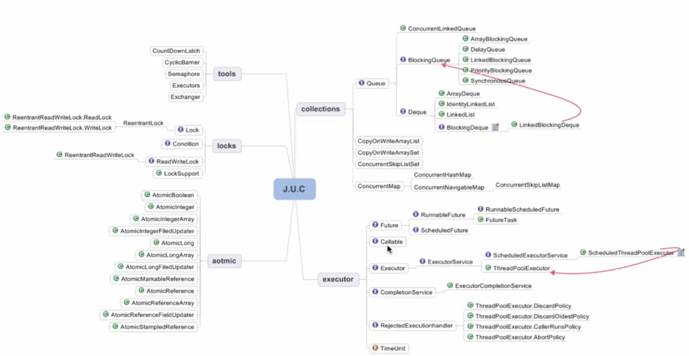

同步容器¶
ArrayList -> Vector Stack
HaspMap -> HashTable (key ,value 不能为空)
Collections.synchronizedXXX (List Set Map) 同步容器。 性能不是特别好，还不能完全做到线程安全，看并发容器
J.U.C java.util.concurrency 并发容器
- ArrayList -> CopyOnWriteArrayList 读多写少的场景 （先从原有的数组里面拷贝一份出来，在新的数组上做写操作，写完之后将原来的数组指向新的数组。不能用于实时读的场景。慎用）
思想：读写分离，最终一致性，使用时另外开辟空间。原数组上读，不加锁；写操作时，加锁，防止多个线程并发修改，复制出多个副本出来。
- HashSet -> CopyOnWriteArraySet
- TreeSet -> ConcurrentSkipListSet removeAll不是线程安全的，需要手工处理
- HashMap -> ConcurrentHashMap 不容许空值。 针对读操作做了大量优化。高并发场景下有特别好的表现。看实现原理
- HashSet -> ConcurrentSkipListMap 跳表结构。key是有序的，支持更高的并发，存取时间和线程数几乎没有关系。
在数据量一定的情况下，并发的线程越多，越能体现出他的优势来。
并发量不高的情况下，可以使用Collections里面提供的**SynchronizedSortedMap**替代,它是将treeMap进行包装，也能提供比较好的效率。
JUC知识图谱
